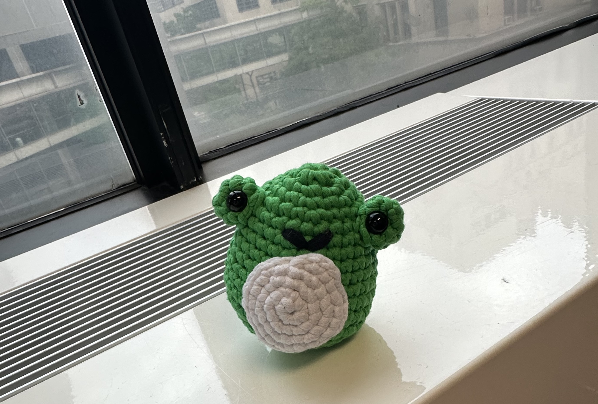

Email: carrie.yu47@myhunter.cuny.edu 
Navbar Media Query: When the screen is minimized, the background color of the navbar will be a purple blue. When the screen expands, the background color will change to a grayish purple.